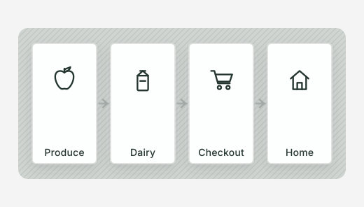
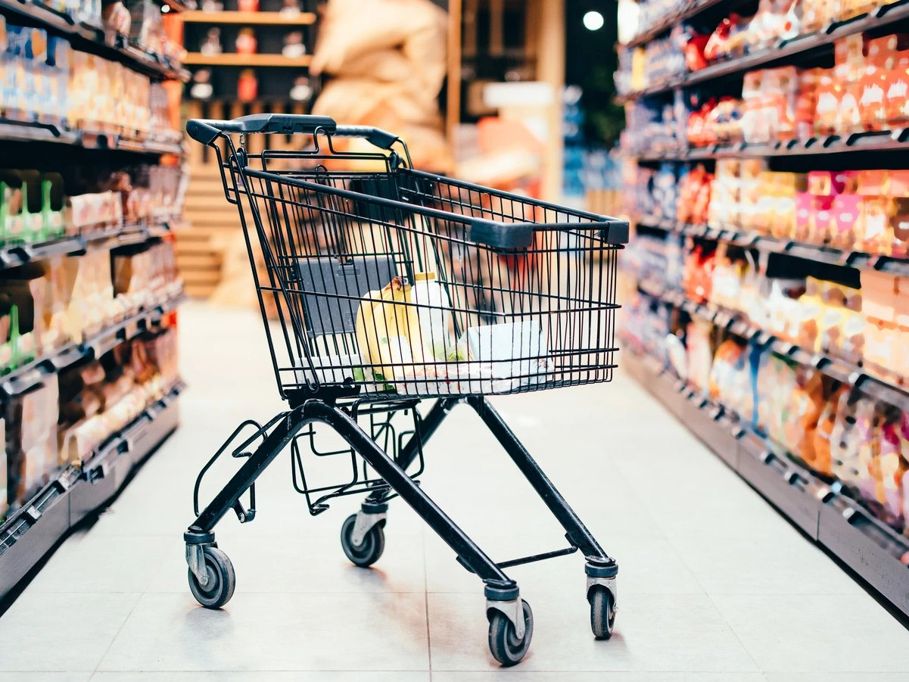
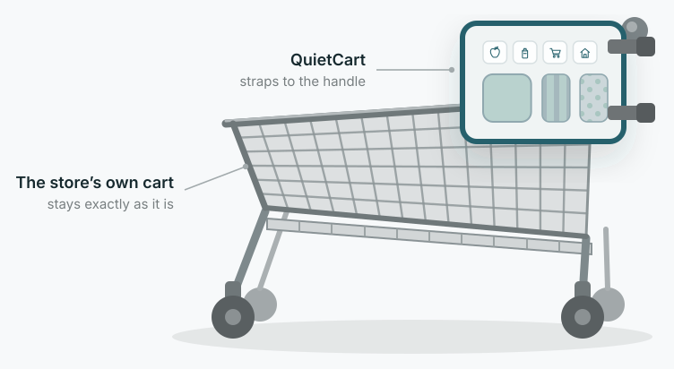
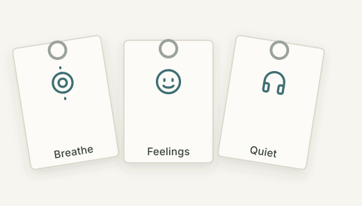
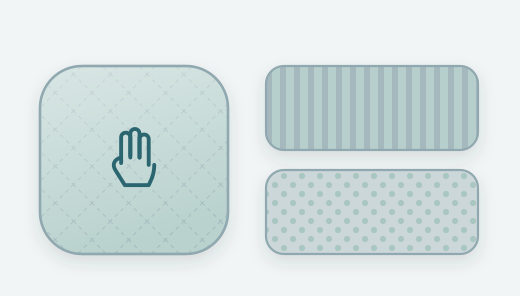
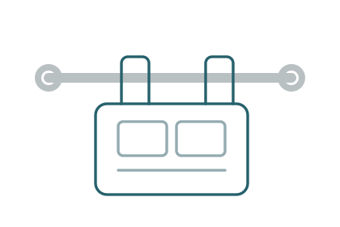
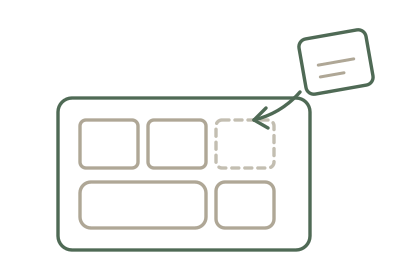
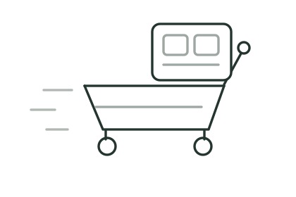
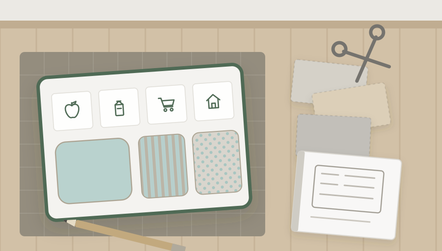
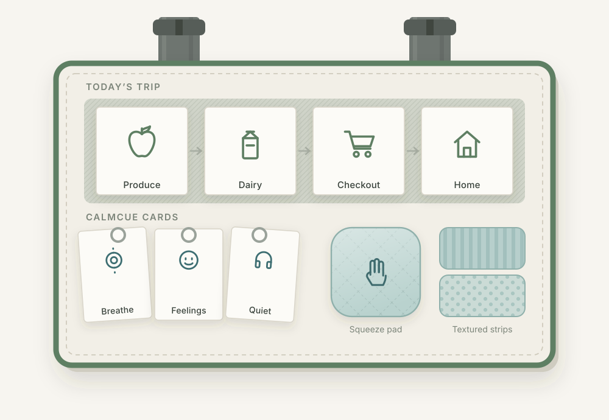

Visual Shopping Board
A simple visual sequence helps children understand what comes next during the shopping trip.
Produce→
Dairy→
Checkout→
Home
QuietCart adds simple sensory and visual support to the shopping cart, helping families navigate overwhelming retail environments with greater comfort and confidence.
Designed by a student founder. Built with families in mind.
The problem
A grocery store asks a great deal of a nervous system. Lights glare, announcements cut across the music, freezers roar, aisles fill and empty without warning, and the checkout line moves at a pace nobody can predict.

The environment isn’t going to change. The support a child brings into it can.
Families shouldn’t have to choose between getting groceries and keeping their child comfortable.
This isn’t guesswork. Before building anything, we sat down with families and asked what a shopping trip actually looks like — then kept going back as each prototype changed.
The product
QuietCart is a padded attachment that straps onto a shopping cart a family is already pushing. It holds a visual shopping board, a set of CalmCue cards, and a few quiet tactile features, all within a child’s reach and line of sight.
QuietCart is an attachment, not a cart. It does not replace the store’s shopping carts and asks nothing of them — no modification, no power, no app, no screen. It goes on at the start of a trip and comes off at the end.

QuietCart straps to the push handle, where a child in the seat can see and reach it. The cart underneath is unchanged.

A simple visual sequence helps children understand what comes next during the shopping trip.

Simple breathing prompts, emotion visuals, and coping reminders that can be used when a child starts feeling overwhelmed.

Tactile strips and soft squeeze pads provide quiet sensory input without creating additional noise or distraction.
How it works
Nothing to set up in advance, nothing to charge, and nothing left behind on the cart when you’re done.

01
QuietCart securely attaches to an existing shopping cart. Two straps go around the handle, and the board sits where a child in the seat can reach it.

02
Families can arrange the visual and sensory tools based on what works best for their child — today’s aisles on the board, the cards that help, the textures that don’t.

03
Children have familiar visual and sensory supports available throughout the shopping trip, and parents can keep shopping the way they normally would.
Why QuietCart
A support that draws attention isn’t much of a support. QuietCart is built to be unremarkable in a store — close at hand for the child, and barely noticeable to anyone else.
Designed to blend into a normal shopping trip, in muted colours and at the size of a placemat.
Uses simple physical tools instead of unnecessary technology. Nothing to charge, update, or lose.
Can be attached when needed and removed afterward, then folded into a bag until the next trip.
Different children benefit from different sensory and visual supports, so every piece moves.
Designed around the actual experience of children and caregivers, not around an idea of one.
Our story
I’m Sai Kanchanam, a senior at Rock Hill High School in Frisco, Texas.
QuietCart started with a question I couldn’t answer. I’d gotten interested in accessibility and product design, and the more I paid attention in grocery stores, the more I noticed how much they ask of a person all at once — the lights, the announcements, the crowding, the waiting. For most people that’s background noise. For some kids it’s the whole trip.
So I started asking instead of assuming. I’ve interviewed more than 50 families about what actually happens on a shopping trip: what helps, what gets packed in a bag and never used, and what makes a parent decide to leave a full cart in the aisle and go home. Those conversations shaped every decision — the size of the board, the order of the cards, and the choice to keep the whole thing quiet and screen-free.
Three prototypes later, I’m still iterating. Each one went back out to families and came back with something to fix. QuietCart has also begun conversations with Frisco Fresh Market about a potential 2027 pilot — nothing is signed and no pilot has run yet, but that’s where the next round of testing would begin.
Product development
A short history, honestly told. QuietCart is a working prototype in active development, not a finished product on a shelf.

The third prototype, mid-revision.
A question about why an ordinary errand is so much harder for some families.
CompleteMore than 50 conversations with parents and caregivers about real trips.
CompleteCardboard, velcro and tape — enough to test size, height and placement.
CompletePadded and washable, reworked around how children actually reach and grab.
CompleteThe current build: sturdier straps, clearer cards, quieter materials.
In progressIn-store testing with a retail partner. Not yet scheduled.
PlannedFor retailers
QuietCart could let a store offer families an additional sensory-friendly resource without replacing a single cart. Nothing about your fleet, your maintenance routine, or your floor plan has to change — a store keeps a few attachments at the front and offers one to families who would like it.
For stores already thinking about accessibility, it is a small and physical place to start.
We are looking for a small number of stores willing to try a handful of attachments and tell us honestly what works and what does not.
Frisco Fresh Market is currently open to discussing a potential 2027 pilot. That conversation is early, nothing has been agreed, and we would rather say so plainly than imply otherwise.
For families
QuietCart is designed to give families another option when shopping becomes overwhelming. It gives a child something predictable to look at, something quiet to hold, and a way to see what is coming next — and it gives a parent one thing to reach for instead of four.
Every child is different. What settles one child does nothing for another, and the same child may need something different on a Tuesday than on a Saturday. QuietCart is built to be rearranged, ignored, or taken off entirely.
QuietCart is a practical support tool, not a treatment or a therapy. It is not a substitute for professional guidance or for the individual strategies you and your child’s care team have worked out together.


Every QuietCart includes the board, the card set, and the quiet sensory pieces.
Pricing
Everything a family needs comes in the box. There is no upgrade, no refill plan, and nothing to sign up for.
QuietCart is still in prototype. Get in touch and we will let you know the moment it is available.
Contact
Whether you have a child who might use QuietCart or a store that might carry it, we would like to hear from you. Tell us which you are: